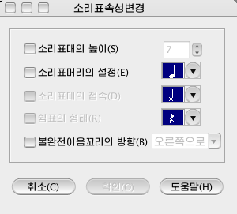

소리표차림표\소리표속성변경...
소리표의 속성을 변경하는 지령입니다. <소리표\소리표속성변경...>차림표를
선택하면<소리표속성변경>대화창이 표시됩니다.

- 소리표대의 높이 : 소리표대의
길이를 변경할수 있습니다.변경은 dot단위로 합니다.
- 소리표머리의 형태 : 소리표머리의 형태를 변경할수 있습니다.
- 소리표대의 접속 : 소리표대와 소리표대의 접속위치를 변경할수 있습니다.
- 쉼표의 형태 : 쉼표의 형태를 변경할수 있습니다.
- 불완전이음꼬리의 방향 : 불완전이음꼬리의 방향을 변경할수 있습니다.
소리표대의 높이를 변경하려면
- <선택>단추를
눌러 선택방식으로 한 다음 마우스를 끌기하여 속성을 변경하려는 소리표들을 선택합니다.
- <소리표\소리표속성변경...>차림표를 선택합니다.
- <소리표속성변경>대화창이
표시됩니다.
- <소리표대의 높이>항목을 체크합니다.
- 입력칸에 필요한 수값을 입력합니다.
- <확인>단추를
누릅니다.
소리표머리의 형태를 변경하려면
- <선택>단추를
눌러 선택방식으로 한 다음 마우스를 끌기하여 소리표머리형태를 변경하려는 소리표들을 선택합니다.
- <소리표\소리표속성변경...>차림표를 선택합니다.
- <소리표속성변경>대화창이
표시됩니다.
- <소리표머리의 형태>항목을 체크합니다.오른쪽에 있는 튀여나오기차림표에서
설정하려는 머리형태를 선택합니다.
- <확인>단추를
누릅니다.
소리표대의 접속을 변경하려면
- <선택>단추를
눌러 선택방식으로 한 다음 마우스를 끌기하여 소리표대의 접속형태를 변경하려는 소리표들을 선택합니다.
- <소리표\소리표속성변경...>차림표를 선택합니다.
- <소리표속성변경>대화창이
표시됩니다.
- <소리표대의접속>항목을
체크합니다.오른쪽에 있는 튀여나오기차림표에서 설정하려는 접속형태를 선택합니다.
- <확인>단추를
누릅니다.
 이 항목은 소리표머리의 형태가 ×로 설정되여있는 경우에만 가능합니다.
이 항목은 소리표머리의 형태가 ×로 설정되여있는 경우에만 가능합니다.
쉼표의 형태를 변경하려면
- <선택>단추를
눌러 선택방식으로 한 다음 마우스를 끌기하여 쉼표형태를 변경하려는 쉼표를 선택합니다.
- <소리표\소리표속성변경...>차림표를 선택합니다.
- <소리표속성변경>대화창이
표시됩니다.
- <쉼표의 형태>항목을
체크합니다.오른쪽에 있는 튀여나오기차림표에서 설정하려는 쉼표형태를 선택합니다.
- <확인>단추를
누릅니다.
불완전이음꼬리의 방향을 변경하려면
- <선택>단추를
눌러 선택방식으로 한 다음 마우스를 끌기하여 불완전이음꼬리의 방향을 변경하려는 쉼표를 선택합니다.
- <소리표\소리표속성변경...>차림표를 선택합니다.
- <소리표속성변경>대화창이
표시됩니다.
- <불완전이음꼬리의 방향 >항목을 체크합니다.오른쪽에 있는 튀여나오기차림표에서
설정하려는 방향을 선택합니다.
- <확인>단추를
누릅니다.